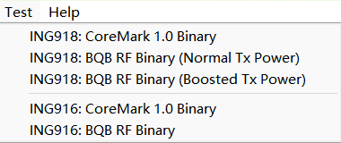
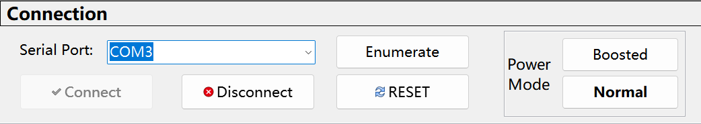
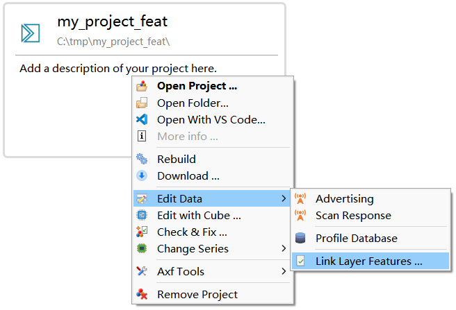
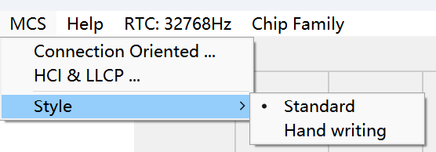

Highlights
- Axf Tool
- v5.4 PAwR (实验性，仅限 ING916)
- 连接的中止、重建和切换 (实验性)
- LE Secure Connection 配对 (实验性)
- ING916XX 使用内部 RC 为主时钟时，如果要使用省电模式，则 RC 频率暂时只能配置为 24MHz。
v8.4.17
1. 软件包
-
[更新]
platform_rt_rc_auto_tune2(NoOS 软件包)旧版本 NoOS 软件包中，
platform_rt_rc_auto_tune2会使用通过 OS 接口里的enter_critical和leave_critical， 因此该函数无法在app_main里使用。新版本中已做改进，可以在
app_main里使用。 -
[修正] ING918:
gap_vendor_tx_continuous_wave功能异常v8.4.15 修复射频时钟门控时，引入了新问题：
gap_vendor_tx_continuous_wave()未打开射频时钟，不能发送信号。现已修复。
2. 工具
-
[更新] Wizard：提供 ING916 BQB RF 测试程序

-
[更新] BQB RF 测试工具：新增发送功率模式设置，改善报错信息。
发送功率模式（”Power Mode”）设置如下图：

说明：ING918 不支持通过工具功率模式设置，请通过下载不同的程序切换功率模式。
v8.4.16
1. 软件包
-
[新增] Platform 事件
PLATFORM_CB_EVT_ON_IDLE_TASK_RESUMED该事件出现说明 RTOS 功能已完全从睡眠中恢复，所有 API 都可以正常使用。
- [修正] Controller: 潜在的内存数据异常
-
[修正] ING918: RTOS 睡眠时间计算错误 (v8.4.6 引入)
v8.4.6~v8.4.15 RTOS 睡眠时间计算错误，睡眠时间偏小，功耗偏大。
- [修正] Controller: 当多个加密或者 CCM 命令排队时会出现断言 (assertion)
- [修正] Controller: 当使能广播时可能出现断言 (assertion)
- [修正] SM: 如果在
SM_FINAL_...事件的处理函数中调用了 SM API 将导致内存泄露 -
[修正] ING916: 快速深睡眠未考虑
buck_en设置旧版本快速深睡眠一律按照 BUCK 使能处理，现在会考虑 BUCK 的实际状态（
SYSCTRL_EnableBuckDCDC()）。
2. 库函数
-
[更新] ING916 ADC: 检测校准数据是否正常，忽略异常数据
-
[新增] ING916:
ADC_ftInitCali原接口
ADC_ftInit仍保留，但不建议使用。
3. 工具
- [更新] Cube: UART/SPI 相关编辑功能
v8.4.15
1. 软件包
-
[修正] SM: 若设置为
SM_AUTHREQ_NO_BONDING，配对时总是上报SM_FINAL_FAIL_OUT_OF_STORAGE -
[修正] ING916: 配对流程意外中断 （涉及
typical,mass_conn,mini及相应的 NoOS 软件包） -
[修正] 当开启扫描时，可能出现 0x3D 为错误码的连接断开
-
[修正] SM 主角色端：发送的 AUTH_REQ 总是为
BONDING旧版本里通过
sm_set_authentication_requirements或者sm_config_conn设置的auth_req对于SM 主角色不生效。现已正常生效。 -
[修正] ING918: 在第 1 个 BLE 活动之前，射频时钟未门控，电流偏大
-
[修正] ATT: 当发送的 Indication 未收到确认时连接断开，将出现内存泄露
此问题将进一步导致 HardFault 等其它问题。
-
[修正] SM: 开启可解析地址或不可解析地址生成功能时，存在内存泄露
长时间运行，最终会导致操作系统的 Heap 耗尽。
2. 库函数
- [新增] 为支持 Zephyr 而增加了一些必要的文件
3. 工具
-
[修正] Cube: 编辑 ING916 SPI 时程序卡死
-
[更新]
icsdw.py: 支持通过 J-Link 下载 -
[更新] 为 Keil 更新了 SVD 文件，包含了所有外设的寄存器
-
[更新] Axf Tool: 改善 dump 文件的解析；分析 FreeRTOS 定时器
v8.4.14
1. 软件包
-
[修正] 某些软件包 PING 特性不完整
由于编译选项设置有误，导致 ING918 exp/noos_exp 软件包及 ING916 所有软件包 PING 特性不完整， 仅能发送 1 次 PING 请求。现已修复。
-
[更新] 改善多连接的任务调度
多连接情况下，发生 0x08, 0x28 等原因的连接断开的概率明显减少。
目前此功能默认关闭。请使用以下代码开启：
platform_config(PLATFORM_CFG_LL_DBG_FLAGS, 0x10);
2. 库函数
-
[修正] ING916xx: ADC 驱动开启编译优化时整数溢出
-
[更新] ING916xx: 提高
flash_prepare_factory_data的鲁棒性旧版本里，如果
flash_prepare_factory_data执行期间意外断电， 再次启动后其它模块获取的工厂数据是错的；现在，该函数会对数据做校验：如果校验失败，会再次准备数据，从而保证后续使用的数据总是正确的。 -
[修正]
btstack_sync: 建立连接时未检查COMMAND_STATUS
3. 工具
-
[更新] tracer: 增加设备地址、连接断开搜索功能
-
[修正] tracer: 某些文件数据正常但是无法解析
v8.4.13
1. 软件包
-
[修正] ING916: 扫描时可能出现
[ASSERTION] @ dtble.c:320 -
[新增] API:
ll_get_capabilities,btstack_get_capabilities分别用来获取链路层和 Host 的能力参数，如最大连接数。
-
[更新]
le_device_db可存储的配对设备数增加为max(10, 最大连接数)注意：内置的键值存储实现目前总大小为 1024 字节，最多只能存储 10 个设备。当需要保存更多的配对设备， 请使用
kv_init_backend实现更大的键值存储。
2. 工具
-
[更新] Tracer：文件解析效率提升
-
[更新] Wizard：查看、修改链路层特性标志位 (Link Link Feature bits)

选择 “Link Layer Features …” 菜单，可以查看当前软件包支持的链路层特性。 如果新建工程时使用了 “COPY to my project” 的方式，这些特性标志就是可以修改的。
注意：修改这些标志可能没有任何效果，或者产生的效果与预期不一致。 一个可能的应用场景：使用传统广播时，如果希望进入连接状态时使用信道选择算法 #1，那么可以在这里关闭算法 #2 特性。
-
[更新] axf_tool: 补充了缺少的文件，改善了对 M4 的支持
v8.4.12
1. 软件包
-
[修正] ING916:
gap_vendor_tx_continuous_wave无法停止发射 -
[修正] Host/Controller 所使用的随机地址可能不一致
当
gap_set_adv_set_random_addr发生错误时：- 原来的行为：Host 使用新地址，Controller 使用旧地址，两个地址不一致
- 现在的行为：Host 和 Controller 都使用旧地址，两个地址保持一致
-
[更新]
sysSetPublicDeviceAddr现在可以在任意位置调用对于广播，新的地址将在再次启动广播时生效。
-
[修正] L2CAP 无法正确处理
CONNECTION_PARAMETER_UPDATE_REQUEST -
[修正] ING918XX：使用 EXT_INT 唤醒时，唤醒过程中可能死机（v8.4.6 引入）
2. 示例
- [更新] Ext. Raw Packet Tx/Rx: 演示将 ING916 用做简易频偏测试仪
v8.4.11
1. 软件包
-
[新增] API:
gap_read_white_lists_size通过该接口可读取白名单的大小。
建议使用 v8.4.13 提供的
ll_get_capabilities，使用更方便。 -
[更新] SM: 现已支持 LE Secure Connection 配对的并发 (experimental)
-
[更新] SM: 收到 Pairing Failed 数据包时立即弹出 SM_FINAL_FAIL_PROTOCOL 代码
原行为：（假设连接一直保持）大约 30 秒后弹出 SM_FINAL_FAIL_TIMEOUT 代码。
-
[更新] ING916xx: Platform 提供的持久化寄存器扩展为 5 比特
相关 API
platform_write_persistent_reg和platform_read_persistent_reg。 -
[修正]
ll_channel_monitor_run: 大约每 20 次必然出现一次接收失败 -
[更新]
platform_rt_rc_tune(): 放松使用限制-
原行为：写入调谐值并开始校准。
如果在
app_main里调用该函数，可能导致校准逻辑异常、死机。 -
现在的行为：写入调谐值并完成校准。
现在可以在任意位置调用，但是函数的运行时间比旧版本长。
-
2. 库函数
-
[更新] ING916xx:
flash_prepare_factory_data现已兼容 NoOS 软件包。
3. 示例
- [更新] UART GATT Console: 演示
gap_read_white_lists_size的用法
4. 工具
- [更新]
gen_files: 提高运行速度
v8.4.10
1. 软件包
-
[新增] API:
gap_disconnect2通过该接口可以设置断开原因。
-
[新增] API:
ll_get_states通过该接口可以获取 Controller 当前的工作状态。
-
[更新] GATT Client: 防止因 API 使用不当而出现内存问题
2. 外设驱动
-
[新增] ING916xx:
PINCTRL_SelSpiPins建议使用该函数为 SPI 配置所有的输入、输出管脚。不要再使用
PINCTRL_SelSpiIn。 -
[更新] ING918xx: power_ctrl.lib 改为使用 Keil 4 编译以便兼容 Gnu 工具链
3. 示例
- [更新] UART GATT Console: 演示了
ll_get_states的用法
4. 工具
- [更新] Cube: 修正了关于 PCAP, SPI 的几个问题
v8.4.9
1. 软件包
-
[新增] ING916 LL Privacy (experimental)
ING916 exp 软件包已支持 LL Privacy。
-
[修正] 使用内置的 kv 实现时，
le_device_db无法正确遍历设备记录此缺陷由 v8.4.6 引入，可导致以下现象：
- 只能保存一个配对设备；
le_device_db_find无法找到已配对设备。
2. 外设驱动
-
[修正] ING916：USB ISO 模式下只在偶数帧发送数据
-
[修正] ING916：无法获取正确的 PCAP DMA 地址
3. 示例
- [更新] HID Mouse: 演示 LL Privacy
- [修正] I/O Over BLE: ING916 的兼容性
4. 工具
- [修正] Afx Tool: 不支持 ING916 mini 软件包
- [更新] Wizard: 切换型号时将删除多余的 .asm 文件，减少报错
v8.4.8
1. 软件包
-
[修正] ING918: 启用 SM 时出现 HardFault
编译器在优化时连续的非对齐访问时错误地使用了不支持非对齐访问机器指令，导致 HardFault。新版本已规避。
-
[新增] ING916 配置项：
PLATFORM_CFG_AUTO_REDUCE_CLOCK_FREQING916 启用省电模式后，会在下列位置、状态自动调低 CPU 时钟频率：
- 默认的 IDLE 过程；
- 进入 DEEP SLEEP、DEEPER SLEEP 等省电状态时。
此配置项默认为开启（旧版本相当于始终为开启状态）。关闭自动降频功能不利于省电，但有利于系统实时性。
-
[新增]
platform_create_us_timer,platform_cancel_us_timer通过以上 API 可以微秒为单位设置定时器。此定时器与
platform_set_timer类似，但存在以下区别：- 精度更高；
- 定时器回调是在中断处理程序中调用。
注意：虽然 API 以微秒为单位，但是并不保证实际精度能达到微秒级。
2. 工具
- [修正] Cube: ING916 定时器时钟分频的默认值
v8.4.7
1. 软件包
-
[更新] SM:
sm_config现在支持多次调用，动态更新参数。 -
[新增] SM 事件
SM_EVENT_IRK_DHK_RESULT
2. 外设驱动
-
[修正] ING916：
SYSCTRL_SelectKeyScanClk -
[新增] ING916：
KEYSCAN_InitializeScanParameter
3. 库函数
- [更新] ING918：ADC 校准
2. 工具
-
[更新] Axf Tool: 只支持当前版本
为了防止安装包迅速变大，从此版本开始，不再支持在命令行里指定历史版本。
-
[更新] Tracer：支持 BLE 5.4；增加 HCI MSC
现已支持 BLE 5.4。新增了 HCI 消息序列图生成功能；MSC 现在有两种样式供选择：

-
[修正] ING918: Downloader Flash Dump 功能
v8.4.6
1. 软件包
-
[更新] ING916:
DEEP_SLEEP增加了一种快速模式此模式下 PMU 保持开启。与已有的慢速模式相比，可以在更短时间内完成睡眠、唤醒流程，但底电流略大。 当睡眠时间小于
PLATFORM_CFG_DEEP_SLEEP_TIME_REDUCTION时，系统会自动尝试快速模式。相应增加了
PLATFORM_CFG_FAST_DEEP_SLEEP_TIME_REDUCTION配置项，默认值为 ~2ms。 -
[修正] SM: 特定情况下重新配对 IRK 未更新
当已经与某设备配对，该设备再次发起配对，且同时满足以下条件时，SM 未更新已经存在的 IRK，导致重新配对后无法正常重连：
- 该设备的身份地址（identity address）类型为 public；
- 重新配对时，该设备更新了它的 IRK。
-
[修正] ING916: Host 支持的并发连接数为 4 (typical 软件包)
自 v8.3.7 起，typical 软件包支持的最大并发连接数修改为 5，但是 v8.3.7 ~ v8.4.5 只修改 Controller 的最大并发连接数，Host 仍为 4。现已统一为 5。
-
[更新]
ll_set_max_conn_number旧版本中，该函数设置的最大连接数仅为提示性参数，影响内存分配、任务调度等。现在，设置最大连接数为 N 后 （N 必须小于等于该软件包所定义的最大并发连接数），则 Controller 所允许的最大并发连接数就是 N。
-
[新增] 连接的中止、重建和切换功能 (experimental)
通过链路层 API
ll_conn_abort可直接中止一个连接，中止后 Controller 将先上报HCI_SUBEVENT_LE_VENDOR_CONNECTION_ABORTED事件，其中包含了该连接的所有链路层参数， 然后上报HCI_EVENT_DISCONNECTION_COMPLETE事件驱动上层断开连接。利用
HCI_SUBEVENT_LE_VENDOR_CONNECTION_ABORTED事件里携带的信息调用ll_create_conn可与对端设备重建该连接。—— 对端设备对此过程无感知。如果先由设备 A 中止连接，再由设备 B 重建，这个连接就从设备 A 切换 到了设备 B。ll_create_conn函数签名也已更新以支持连接重建，考虑到这个接口可以还会更新，所以已从extension包中移除。 -
[更新]
platform_api.h：“32k 时钟”更名为“实时时钟”相关配置项的名称同步修改，以下 3 个相关函数也同步更名：
函数原名 函数现名称 platform_calibrate_32kplatform_calibrate_rt_clkplatform_32k_rc_tuneplatform_rt_rc_tuneplatform_32k_rc_auto_tuneplatform_rt_rc_auto_tune兼容性说明：原名称仍以“别名”的形式保留，现有代码仍可正常编译。新增
platform_rt_rc_auto_tune2可将实时 RC 时钟调谐到指定频率。 -
[更新] ING918: 实时 RC 时钟源调谐为 50kHz
相应地，
RTC_CLK_FREQ也改为 50kHz。一般情况下，现有项目的源代码不需要修改。 如果代码中使用了另外定义的常量 32768，比如将时间换算为周期数时隐式使用了 32768，那么需要修改：// 关机 1.5s 后重启 platform_shutdown(49152, NULL, 0); -
[更新] SM: 支持 LE Secure Connections Pairing (experimental)
示例请参考 HID Keyboard 和 Pairing with OOB。
-
[更新] ING916 platform.bin 结构
更新之后：
- platform.bin 的第一个扇区仅用于存放中断向量表和
struct platform_info，未用的空间由 0xFF 填充； - 0x02003000 处保存了中断向量表的起始地址，其值为 0x02002000。
借助这种结构开发者可以完全接管系统的启动过程，实现 二级 Bootloader 等功能。
- platform.bin 的第一个扇区仅用于存放中断向量表和
-
[修正] ING916：意外地睡眠过长时间
2. 外设驱动
-
[新增] ING916:
flash_read_uid用该接口读取 Flash 的唯一 ID。
-
[新增] ING916:
PCAP_ClearFifo,PWM_SetIntTrigLevel分别用来清空 PWM/PCAP 的 FIFO、设置 FIFO 中断触发深度。
-
[修正] ING916：
apSSP_SetTransferControlDummyCnt -
[修正] ING916：QDEC/KeyScan 在某些编译器下的警告
-
[修正] ING916：
RTC_IsModificationDone总是返回 0
3. 库函数
-
[更新] ING918：伴随 50kHz 实时时钟更新 power control 库
更新后的库兼容 32k 实时时钟。
-
[更新]
platform_util.c: 支持新的 ING918 platform.bin 结构
4. 示例
-
[新增] PAwR：演示了 PAwR 相关的所有 API 和事件的用法。
-
[更新] UART Console：演示了连接的中止和重建。
-
[修正] HID Keyboard：键盘状态显示
-
[更新] HID Keyboard：演示 LE Secure Connection 配对
-
[新增] Pairing with OOB: 演示了 OOB 配对的用法
5. 工具
- [更新] 针对“实时时钟”同步更新 Cube
v8.4.5
1. 软件包
-
[更新] ING916: 将更多的内存块映射为 SYS RAM (mini & noos_mini)
ING916 除 Cache 外共有 64KiB 内存，部分内存选择映射为 SYS RAM 或 SHARE RAM。旧版本中， SYS、SHARE 各 32KiB。从 v8.4.5 开始，在 noos_mini 和 mini 软件包分别配置 56 KiB SYS RAM 和 8 KiB SHARE RAM； 在其它软件包里，SYS、SHARE 仍各为 32 KiB。
关于 ING916 内存的 更多信息。
-
[新增]
platform_call_on_stackING916 处理能力强大，但 RAM 相对较小。进行复杂运算处理时（尤其是移植已有算法时），往往出现栈空间不足的情况。 为此我们提供了这个新的 API，可以临时切换到的一个单独的栈空间上完成函数调用。例如，临时借用 D-Cache：
SYSCTRL_CacheControl(SYSCTRL_MEM_BLOCK_AS_CACHE, SYSCTRL_MEM_BLOCK_AS_SYS_MEM); { platform_call_on_stack(complex_algorithm_function, NULL, SYSCTRL_D_CACHE_AS_MEM_BASE_ADDR, 8192); } SYSCTRL_CacheControl(SYSCTRL_MEM_BLOCK_AS_CACHE, SYSCTRL_MEM_BLOCK_AS_CACHE); -
[新增]
ll_create_conn(extension & exp)借助这个 API，开发者可以在 BLE 标准定义的连接建立方法（如广播、PAwR）之外，设计其它方法建立连接， 比如 Direct Connection。
-
[新增] ING916 软件包 exp & noos_exp：开始提供 PAwR API (实验性)
2. 外设驱动
- [修正] ING916:
GIO_EnableDeepSleepWakeupSource允许禁用上下拉
3. 示例
-
[更新] Voice Remote Control：改为使用 Google 开源的 libsbc
-
[更新] BLE RPC 相关代码，版本号升级为 2
-
[修正] HID Keyboard：
key_impl.c -
[新增] Direct Connection：演示了
ll_create_conn的用法
4. 工具
-
[修正] GUI 版 Downloader 使用串口下载时可能锁死
旧版本当设置为非批量下载且不启动程序时，下载完成后用户界面会锁死，无法操作。
-
[更新] ing_usb.exe: 全面支持下载；修正了几个问题
现在
-d flash_download.ini下载功能更加完善，支持除批量下载时的脚本功能以外的全部功能。 -
[新增] 可执行文件和 Dump 分析工具 Axf Tool
详情。
v8.4.4
1. 软件包
-
[更新] ING916: 优化省电性能
每个工作周期电量修消耗降低 ~1μC （具体数值受频率等因素的影响）。
-
[修正] ING916: 同时允许
BLE_ONLY_SLEEP和DEEP_SLEEP时频繁重启
2. 外设驱动
- [修正] ING916:
PINCTRL_DisableAllInputs里的溢出问题
3. 示例
- [更新] Peripheral Console (…): 在 ING916 上允许
BLE_ONLY_SLEEP
4. 工具
-
[更新] Cube
修正了为 USB 生成的代码。现在允许一个数字管脚用作两种功能（GPIO 及另一种外设的输入）， 并给出警告。
v8.4.3
1. 软件包
- [修正] v8.4.1~v8.4.2 ING916 睡眠状态下底电流时大时小的问题 (涉及 mini 和 noos_mini 软件包)
v8.4.2
1. 软件包
-
[修正] v8.4.1 ING916 睡眠状态下底电流变大的问题 (涉及 mini 和 noos_mini 软件包)
-
[更新]
platform_calibrate_32k现在，每次调用
platform_calibrate_32k时，将调整下次的校准时间至PLATFORM_CFG_32K_CALI_PERIOD之后。旧版本调用platform_calibrate_32k不会影响下次的校准时间。
2. 外设驱动
-
[新增] Sofware d/h/m/s RTC
为 ING918xx 增加了一套基于
platform_set_timer等 API 实现的天、时、分、秒计时器， 接口与 ING916XX RTC 兼容。对于 ING916xx，可通过SOFTWARE_RTC_DHMS编译开关选择硬件方式或者软件方式。两种实现方式的区别：
-
对于软件方式，使用
RTC_SoftSetISR设置“中断”处理函数，而非platform_set_irq_callback； -
对于软件方式，除了
RTC_SoftSetISR， 所有 API 只在协议栈初始化之后（PLATFORM_CB_EVT_PROFILE_INIT事件）方可使用； -
软件方式不需要调整（Trim），其精度由软件包内置周期性校准功能保证；
-
软件方式下的“中断”实际就是
platform_set_timer等的回调函数，“抖动”比硬件方式大。
-
-
[更新] ING916xx: 提供更多的 GPIO 唤醒方式
详见 外设开发者手册-睡眠唤醒源。
-
[新增] ING916xx:
RTC_TrimRTC_Trim实现了完整的 ING916xx RTC 数字调校功能。 -
[更新] ING916xx: 更多的 KeyScan API
增加了 Loop 中断、FIFO 相关的接口。
v8.4.1
1. 软件包
-
[修正] Raw Package API: 当接收的数据包的数据长度为 0 时报错
-
[更新] ING916: 将更多的代码移动到 RAM 以降低功耗 (限 mini 和 noos_mini 软件包)
该更新针对空包维持连接状态优化了功耗。
-
[新增] BLE 协议栈 API:
btstack_reset可完整复位协议栈。
-
[新增] platform event:
PLATFORM_CB_EVT_HCI_RECV -
[新增] platform API:
platform_get_link_layer_interf借助以上两个接口可完整暴露 Controller 的功能，为开发 BLE Dongle 带来可能。后续版本将提供示例。
2. 外设驱动
-
[新增] ING916xx: Flash 写保护接口
flash_enable_write_protection通过此接口可将 ING916xx 内置的 Flash 的全部或者一部分置为写保护状态。再次向写保护区域写入数据时，需要先解除写保护。
-
[更新] ING916xx: USB BPS 头文件中增加
bsp_usb_disable -
[修正] ING916xx:
KEYSCAN_Initialize对 GPIO 上下拉的配置。 -
[修正] ING916xx:
SYSCTRL_SelectMemoryBlocks潜在的睡眠电流达 20uA 的问题
3. 工具
-
[更新] Downloader: 为 ING916 增加 Flash 写保护选项。

-
[更新] ING916 Flash 下载算法
更新后的 ING916 Flash 下载算法行为如下：
- 开始下载时，解除写保护。
v8.4.0
1. 软件包
-
[修正] SM：配对设备数量超出存储容量时不报错
过去，当超出存储容量时，SM 模块仍会在 SM_EVENT_STATE_CHANGED 事件中报告
SM_FINAL_PAIRED等成功信息； 现在，SM 模块将在 SM_EVENT_STATE_CHANGED 事件中报告SM_FINAL_FAIL_OUT_OF_STORAGE。 -
[修正] Controller：使用可解析地址的定向广播时的兼容性
当向可解析地址发送定向广播时，旧版本存在兼容性问题，导致无法与某些设备建立连接。现已修复。
-
[更新] 键值存储模块（kv_storage）现在允许自定义后端实现
默认的 KV 后端在写入时通过
f_kv_write_to_nvm回调一并写入所有数据。 如果发现默认的 KV 实现方式不合适，可以在app_main里调用kv_init_backend，传入自定义的后端接口。void kv_init_backend(const kv_backend_t *backend);自定义后端带来了灵活性，比如利用
kv_value_modified_of_key接口可实现小颗粒度（K-V 对）的精细化存储。 -
[修正] Host：使用公共地址（public address）时无法配对
-
[修正] ING916xx:
platform_switch_app功能异常 -
[修正] ING916xx: BLE_ONLY_SLEEP 睡眠模式的稳定性问题
-
[更新] 提供更多的定时器接口
platform_get_timer_counterplatform_set_abs_timerplatform_delete_timer
相比原来单一的
platform_set_timer，现在的接口可实现更多功能，比如准确模拟周期性定时器。 -
[新增] GAP API：
gap_set_callback_for_next_hci具体用途将在后续版本中演示。
-
[新增] SM API：
sm_register_external_ltk_callback一些 BLE 应用可能会以自定义的方式协商 LTK（比如 Find My）。通过此 API 注册回调， 可将这种外部生成的 LTK 传递给 SM 层。
注意：此 API 处于实验阶段，后续版本可能修改。 -
[新增] 链路层配置项：
LL_CFG_FEATURE_SET_MASK有时需要“模仿”其它 BLE 设备的链路层协议流程，而支持的特性对后续的链路层协议流程影响很大。 为此增加了链路层特性掩码，方便开发者即时调整上报给对端设备的链路层特性。例如，模仿只支持加密和 2M PHY 两种特性的设备：
const uint8_t feature_mask[8] = { 0x01, // 比特 0: LE Encryption 0x01, // 比特 8: LE 2M PHY }; //... ll_config(LL_CFG_FEATURE_SET_MASK, (uintptr_t)feature_mask);注意，这里只是修改了 Feature Exchange 流程的上报值，对链路层的实际功能没有影响。
2. 外设驱动
-
[修正] ING916xx:
SYSCTRL_EnableConfigClocksAfterWakeup与 Flash 读保护功能冲突 -
[修正] ING916xx:
SYSCTRL_CacheControl无法配置 D-Cache 的问题 -
[修正] ING916xx:
apSSP_DeviceParametersSet参数范围溢出时寄存器配置异常 -
[修正] ING916xx:
ADC_GetVol遇到最大读数时返回值错误 -
[修正] ING916xx: ADC/PDM 的时钟分频范围
-
[新增] ING916xx: 将 PLL 的输出分频并输出到指定的管脚
新增了两个相关的接口：
SYSCTRL_EnableClockOutputPINCTRL_SelClockOutput
3. 示例
- [更新]
HID Keyboard：演示里kv_init_backend的用法
4. 工具
- [更新] Cube: 修正了一些问题，增加 PLL 分频输出相关功能
ING918：如何使用 32k 外部晶体作为实时时钟源
同旧版本一样，将实时时钟源切换到 32k 外部晶体。避免使用 RTC_CLK_FREQ，可以定义一个新的常量，
比如 #define RT_OSC_CLK_FREQ 32768。软件包与实时时钟源频率无关，受影响的主要是 FreeRTOS，
所以分两种情况。
-
情况 1. 使用了内置 FreeRTOS 的软件包
-
如果关注 Tick、
pdMS_TO_TICKS等的准确度，-
改为使用 NoOS 的软件包，自行编译 FreeRTOS：将
configSYSTICK_CLOCK_HZ定义为RT_OSC_CLK_FREQ，或者， -
自定义函数完成 Tick 与毫秒的换算。
-
-
如果不关注，那么可以继续使用。
-
-
情况 2. 使用了 NoOS 软件包：确认 SYSTICK 时钟频率配置为
RT_OSC_CLK_FREQ。